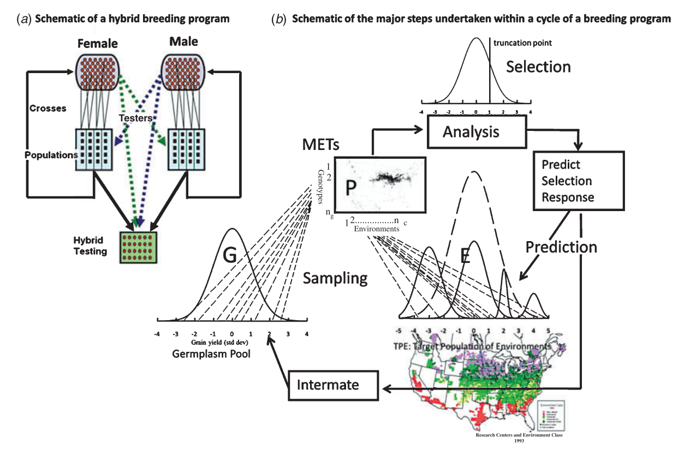
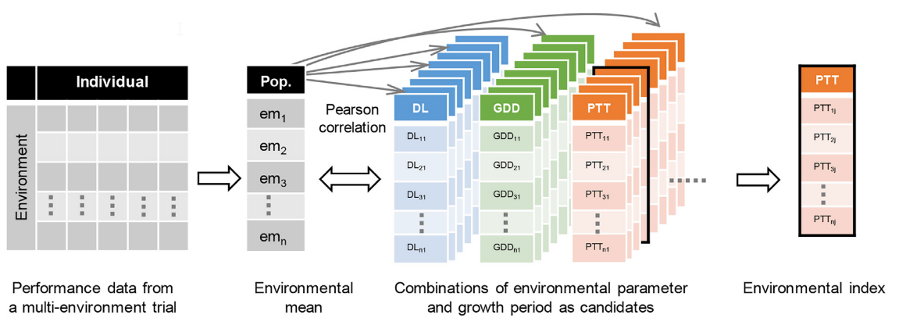
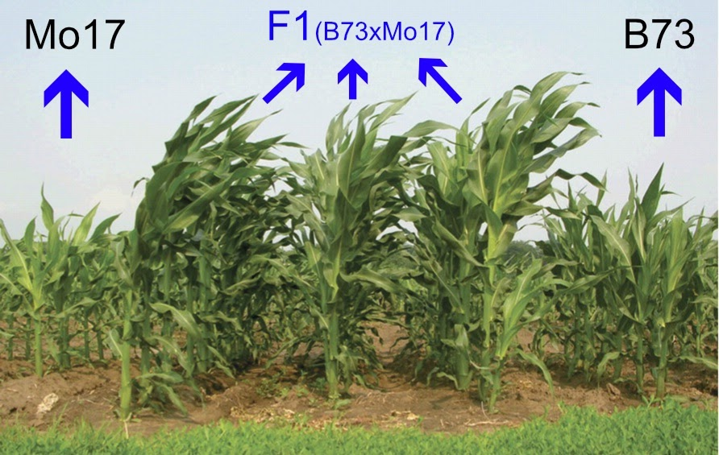

Research
My research uses quantitative genetics, statistical genomics, and field-based phenotyping to improve maize breeding and understand complex trait variation.
Research Interests
- Genomic prediction: prediction across breeding stages, structured populations, and multi-environment trials.
- Genotype-by-environment interaction: environmental drivers, phenotypic plasticity, reaction norms, and maize adaptation.
- Heterosis: hybrid performance, reciprocal crosses, pan-genome resources, omics data, and high-throughput phenotyping.
- Stress adaptation: drought tolerance, phosphorus-use efficiency, and trait stability under field conditions.
Improve Breeding Efficiency
Commercial breeding programs require accurate decisions across line development, hybrid prediction, and multi-environment testing. I am interested in models that improve selection decisions while also clarifying the genetic basis of inbred performance, hybrid performance, and heterosis.

Phenotypic Plasticity
Phenotypic plasticity describes the ability of a genotype to express different phenotypes across environments. In maize, traits such as flowering time provide a useful system for studying how genetic factors, environmental cues, and their interactions shape adaptation.
I use reaction-norm and genomic prediction frameworks to identify environmental indices, estimate plasticity parameters, and connect phenotypic responses with candidate genomic regions.

Heterosis
Heterosis, or hybrid vigor, occurs when progeny from diverse parents outperform their parents. My work uses mating designs, statistical genomic models, pan-genome resources, and omics data to study the genetic basis of hybrid performance.

Methods
GWAS, mixed models, genomic selection, reaction-norm modeling, genotype-by-environment interaction, BGLR, rrBLUP, and R.